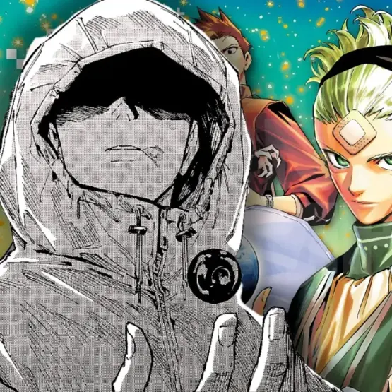

Meu primeiro post
Por: Matheus Bianchini
Bem vindo ao meu blog, hoje irei falar sobre jujutsu kaisen modulo e suas polemicas sobre Yuji Itadori
Irei falar sobre jujutsu kaisen modulo

Por: Matheus Bianchini
Bem vindo ao meu blog, hoje irei falar sobre jujutsu kaisen modulo e suas polemicas sobre Yuji Itadori